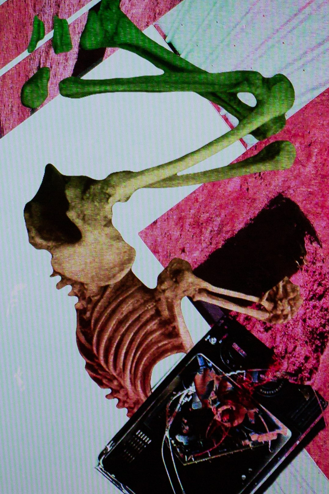

Anatomy of an Object Head (2022)
Olivia Kirk
Animated GIF Projection
Museums have a reputation for collecting and displaying pieces from across the world and from many cultures, but the unfortunate thing is that a lot of select items from indigenous nations and otherwise foreign nations are stolen artefacts that are kept from the possession of their original peoples.
Among these artefacts, there is also a vast collection of native people’s bodies held on display on foreign land far from any respectable burial ground, a victim of such being the rather infamous Sarah Baartman herself, a woman of colour dissected and presented like an object after a life spent as a freakshow for white Europeans.
‘Anatomy of an Object Head’ is a series that criticises this objectification and plays with audiences to emphasise the horror of this form of looking.

'Anatomy of an Object Head', 2022 (Detail), Image Courtesy the Artist